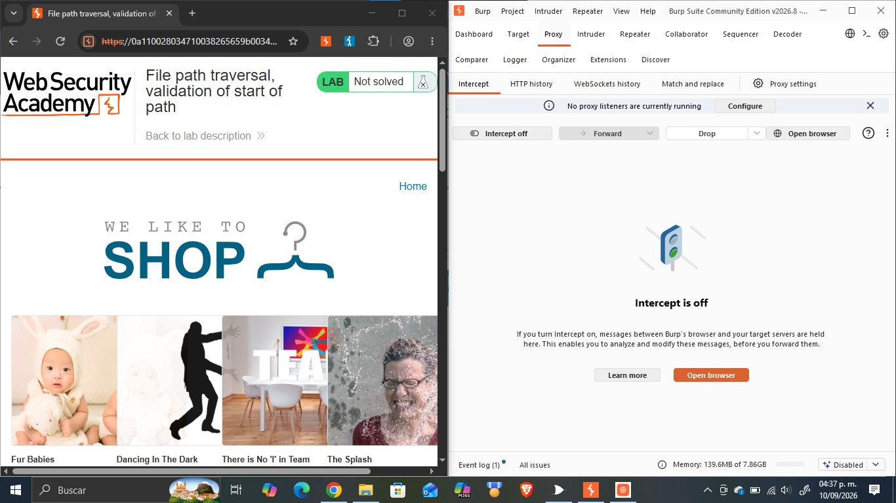
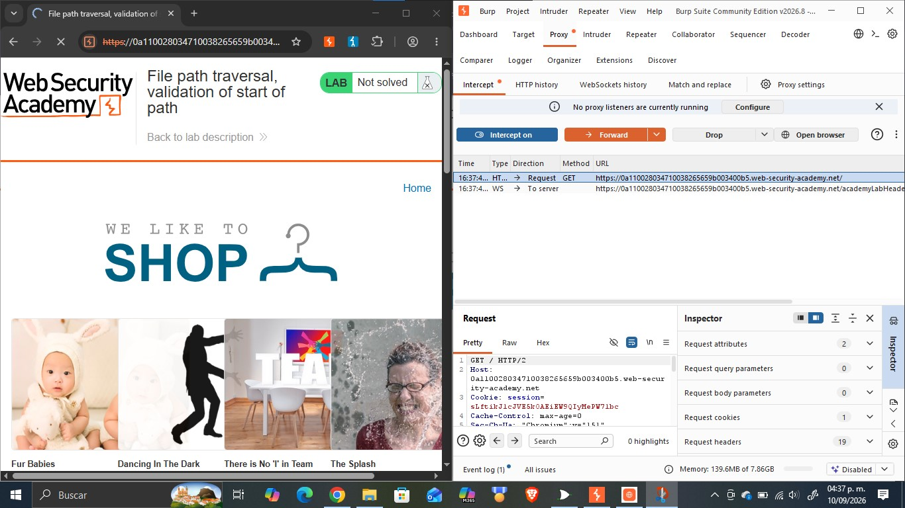
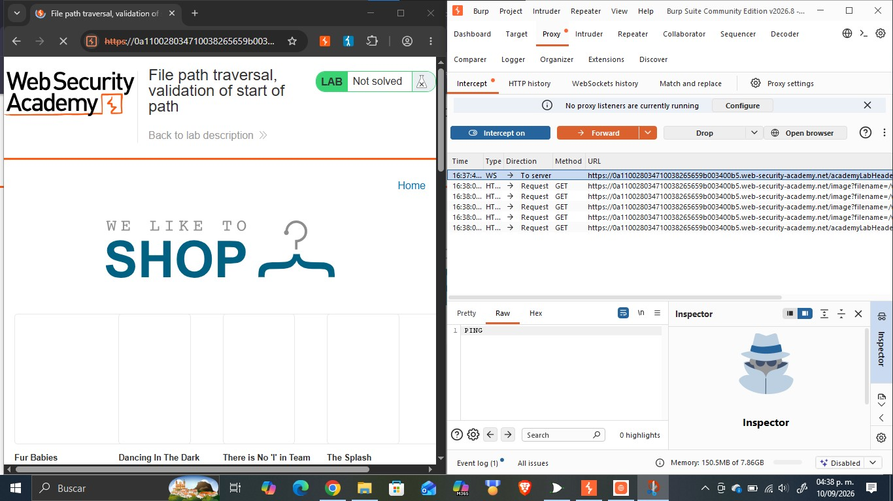
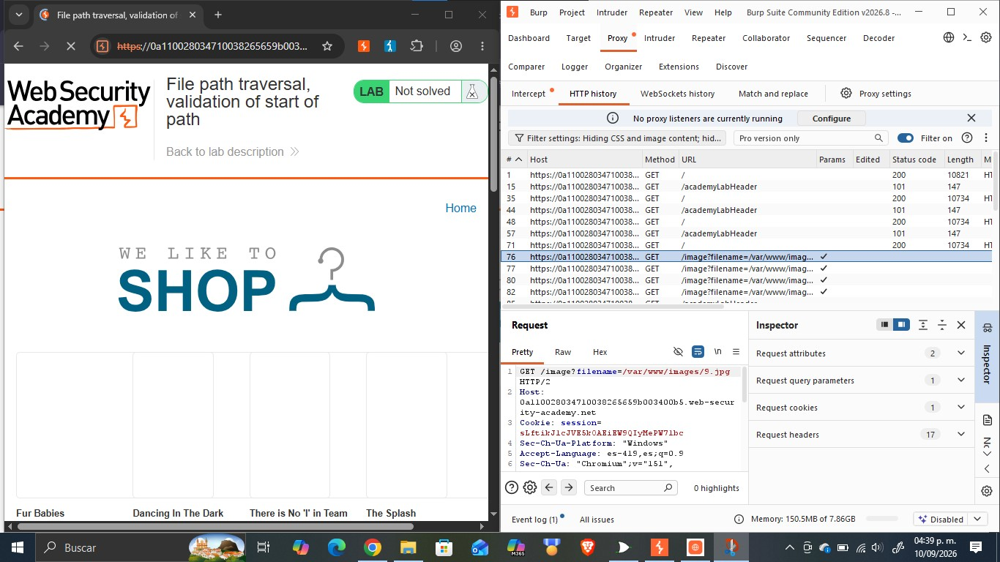
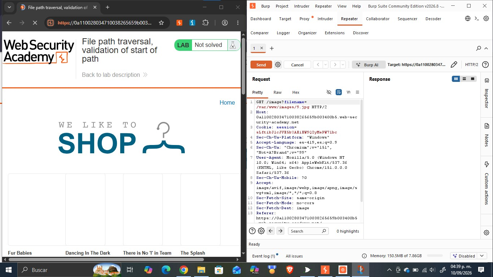
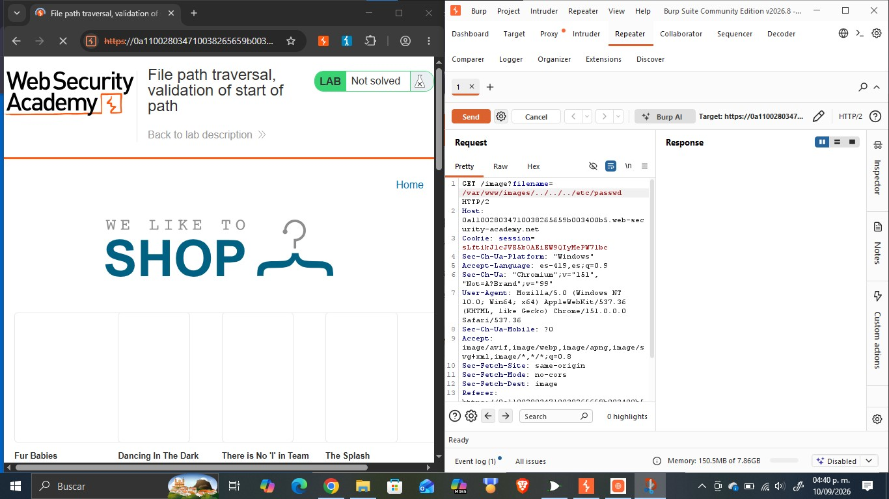
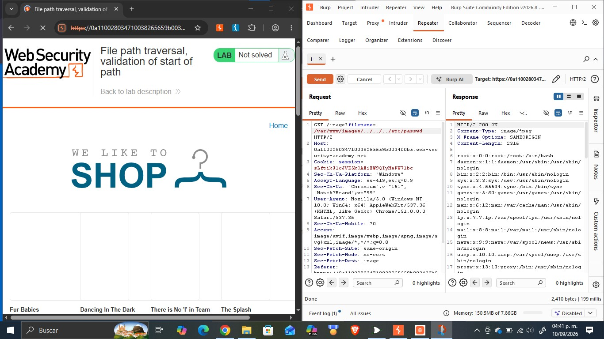
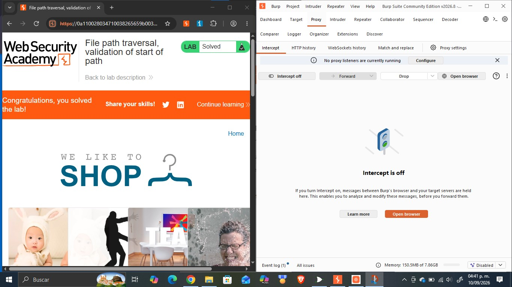

Objetivo
Este reporte documenta la resolución del laboratorio «File path traversal, validation of start of path» de PortSwigger Web Security Academy, cuyo objetivo es explotar una vulnerabilidad de path traversal en la funcionalidad de visualización de imágenes de una tienda en línea, sorteando una validación que solo verifica que la ruta recibida comience con el directorio de imágenes esperado, con el fin de acceder a archivos del sistema operativo del servidor que no deberían ser accesibles públicamente. La actividad forma parte del portafolio de evidencias «Road to Hall of Fame» de la asignatura CNO IV Seguridad Informática y profundiza en un cuarto obstáculo frente al path traversal categoría A01:2021 Broken Access Control del OWASP Top 10, relacionado con validar solo el inicio de una ruta en lugar de su contenido completo, así como en las técnicas para evadirlo usando Burp Suite.
Desarrollo
Esta sección documenta el laboratorio realizado en la práctica: su ficha técnica, la fundamentación de la vulnerabilidad explotada, el procedimiento seguido paso a paso con la evidencia fotográfica integrada en cada paso, el análisis del payload utilizado y las medidas de mitigación recomendadas.
| Nombre del Laboratorio | Nivel | Tipo de Explotación | Objetivo del laboratorio |
|---|---|---|---|
| File path traversal, validation of start of path | Practitioner | Path Traversal / Directory Traversal bypass de una validación que solo comprueba el directorio inicial de la ruta recibida en el parámetro filename. | Explotar la vulnerabilidad de path traversal presente en la funcionalidad de visualización de imágenes de producto, incluyendo el directorio base esperado al inicio de la ruta para superar la validación y añadiendo secuencias de traversal a continuación, para recuperar el contenido del archivo /etc/passwd del servidor. |
Explicación técnica de la vulnerabilidad
A diferencia de los laboratorios anteriores, en este caso la aplicación no construye la ruta del archivo concatenando un directorio base fijo a un nombre de archivo recibido del cliente; en su lugar, el parámetro filename transporta la ruta completa del archivo, y el servidor se limita a validar que dicha ruta comience con el directorio esperado, /var/www/images/. Esta validación es insuficiente porque solo examina el prefijo de la cadena recibida, sin verificar ni canonicalizar el resto de la ruta. En consecuencia, un atacante puede satisfacer la validación incluyendo el directorio exigido al inicio de la ruta y, a continuación, añadir secuencias de traversal «../» que hagan que el sistema de archivos suba de nivel repetidamente hasta salir por completo de ese directorio antes de descender hacia el archivo objetivo. Por ejemplo, la ruta /var/www/images/../../../etc/passwd comienza, tal como exige el filtro, con «/var/www/images/», por lo que supera la validación; sin embargo, al resolverla, el sistema operativo primero entra en /var/www/images/ y luego sube tres niveles («../../../»), lo que lo saca del árbol de directorios de imágenes y lo sitúa en la raíz del sistema de archivos, desde donde accede a etc/passwd. Esta vulnerabilidad ilustra un obstáculo distinto a los anteriores: la falla no está en el filtrado de patrones ni en el orden de decodificación, sino en validar únicamente el inicio de una ruta en lugar de resolverla (canonicalizarla) por completo y verificar el resultado final. Corresponde igualmente a la categoría A01:2021 – Broken Access Control del OWASP Top 10.
Procedimiento paso a paso
Paso 1. Se abrió el laboratorio «File path traversal, validation of start of path» en el navegador integrado de Burp Suite, con Intercept desactivado, verificando el estado inicial «Not solved».

Paso 2. Se activó la opción «Intercept on» en la pestaña Proxy de Burp Suite y se recargó la página principal, capturando la primera petición GET / enviada por el navegador hacia el servidor.

Paso 3. Al reenviar (Forward) las peticiones interceptadas, se observó en el historial HTTP que el navegador solicitaba múltiples recursos a través del endpoint /image, cada uno con un parámetro filename que transportaba la ruta completa (/var/www/images/…), correspondientes a las imágenes de los productos de la tienda.

Paso 4. Se seleccionó la petición GET /image?filename=/var/www/images/9.jpg en el historial HTTP y se examinaron sus cabeceras completas, confirmando que el parámetro filename transmite la ruta completa del archivo en lugar de solo su nombre.

Paso 5. La petición se envió a la pestaña Repeater de Burp Suite (Send to Repeater) para poder modificarla y reenviarla de forma controlada, conservando inicialmente el valor original del parámetro.

Paso 6. En Repeater se sustituyó el valor del parámetro filename por /var/www/images/../../../etc/passwd, conservando el directorio /var/www/images/ al inicio de la ruta para superar la validación, y añadiendo a continuación las secuencias «../» necesarias para salir de ese directorio y llegar a /etc/passwd.

Paso 7. Se envió la petición modificada mediante el botón Send y se analizó la respuesta del servidor, confirmando el código de estado 200 OK y verificando que el cuerpo de la respuesta contenía el listado completo de usuarios del sistema, lo que evidenció la lectura exitosa del archivo /etc/passwd.

Paso 8. Se regresó al navegador y se recargó la página del laboratorio, confirmando que el banner superior mostraba el mensaje «Congratulations, ¡you solved the lab!» y que el estado del laboratorio había cambiado de «Not solved» a «Solved».

Explicación del payload
El payload utilizado fue /var/www/images/../../../etc/passwd, enviado como valor completo del parámetro filename en la petición GET /image?filename=/var/www/images/../../../etc/passwd. El payload tiene dos partes con funciones distintas. La primera, «/var/www/images/», no aporta nada a la explotación en sí, pero es indispensable para superar la validación del servidor, que únicamente comprueba que la cadena recibida comience con ese directorio exacto; al incluirlo literalmente al inicio, la validación se satisface sin necesidad de romperla. La segunda parte, «../../../etc/passwd», es la secuencia de traversal real: cada «../» indica al sistema de archivos que suba un nivel en la jerarquía de directorios. Como el sistema operativo resuelve la ruta completa de forma secuencial entra primero en /var/www/images/ y luego aplica cada «../» sobre esa posición, termina subiendo tres niveles por encima del directorio de imágenes, lo que lo saca de él y lo sitúa en la raíz del sistema de archivos, desde donde desciende hacia etc/passwd. El payload es efectivo porque la validación del servidor se limita a examinar el prefijo literal de la cadena y nunca resuelve (canonicaliza) la ruta completa para comprobar en qué directorio termina realmente apuntando.
Mitigación recomendada
Para prevenir y corregir esta vulnerabilidad se recomienda:
- Canonicalizar (resolver) la ruta completa recibida incluyendo cualquier «../» y enlace simbólico antes de validarla, y verificar el directorio en el que realmente termina apuntando, en lugar de comprobar únicamente el prefijo de la cadena original.
- Rechazar cualquier ruta que, tras canonicalizarla, no quede exactamente dentro del directorio base permitido, incluso si el texto original comenzaba con ese directorio.
- Evitar que el cliente transmita rutas de archivo completas; en su lugar, aceptar solo el nombre del archivo (sin separadores de directorio) o un identificador indirecto (p. ej. un ID numérico mapeado internamente al archivo real).
- Emplear una lista blanca (allow-list) de nombres o identificadores de archivo válidos en lugar de intentar validar la forma de una ruta arbitraria proporcionada por el cliente.
- Ejecutar el proceso del servidor de aplicaciones con el mínimo privilegio necesario, restringiendo los permisos de lectura únicamente a los directorios estrictamente requeridos.
- Incorporar pruebas de seguridad (SAST/DAST) con payloads que combinen un prefijo de directorio válido seguido de secuencias de traversal, dentro del ciclo de desarrollo seguro, para detectar validaciones que solo examinan el inicio de una ruta.
Resultados
Se logró explotar exitosamente la vulnerabilidad de path traversal presente en el endpoint /image, evadiendo la validación que solo comprueba el directorio inicial de la ruta recibida. Al sustituir el parámetro filename por /var/www/images/../../../etc/passwd, se obtuvo una respuesta HTTP 200 OK cuyo cuerpo contenía el archivo /etc/passwd completo del servidor, evidenciando cuentas del sistema como root, daemon, bin, sys y www-data, entre otras. Este hallazgo fue confirmado por el propio laboratorio de PortSwigger, que actualizó automáticamente el estado de «Not solved» a «Solved» al detectar la lectura del archivo objetivo. El resultado demuestra que validar únicamente el prefijo de una ruta proporcionada por el cliente es insuficiente si no se canonicaliza y verifica la ruta completa resultante, ya que un atacante puede satisfacer trivialmente esa validación superficial y aun así dirigir el acceso final a un archivo completamente distinto del directorio permitido.
Conclusión
Este laboratorio permitió comprender que una validación de entrada puede parecer razonable en apariencia exigir que una ruta comience con un directorio específico y, sin embargo, ser completamente ineficaz si no se combina con la canonicalización de la ruta final. Se reforzó el uso de Burp Suite en particular Repeater para construir un payload que combina el prefijo exigido por el filtro con una secuencia de traversal efectiva. Esta actividad complementa los contenidos de la asignatura CNO IV Seguridad Informática al mostrar que las validaciones basadas en el formato superficial de una entrada (como su prefijo) deben complementarse siempre con una verificación semántica del resultado real, un principio aplicable a múltiples categorías del OWASP Top 10 más allá de path traversal. Como siguiente paso dentro del portafolio «Road to Hall of Fame», se continuará documentando variantes adicionales de esta vulnerabilidad.
Referencias bibliográficas
- PortSwigger. (s.f.). File path traversal, validation of start of path. PortSwigger Web Security Academy. https://portswigger.net/web-security/file-path-traversal/lab-validate-start-of-path
- PortSwigger. (s.f.). Path traversal. PortSwigger Web Security Academy. https://portswigger.net/web-security/file-path-traversal
- OWASP. (2021). A01:2021 – Broken Access Control. OWASP Top 10. https://owasp.org/Top10/A01_2021-Broken_Access_Control/
- PortSwigger. (s.f.). Burp Suite documentation. https://portswigger.net/burp/documentation